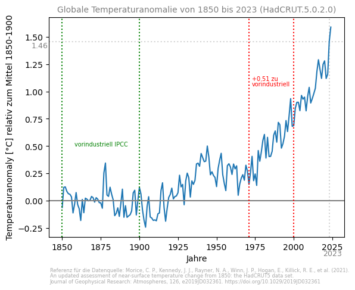
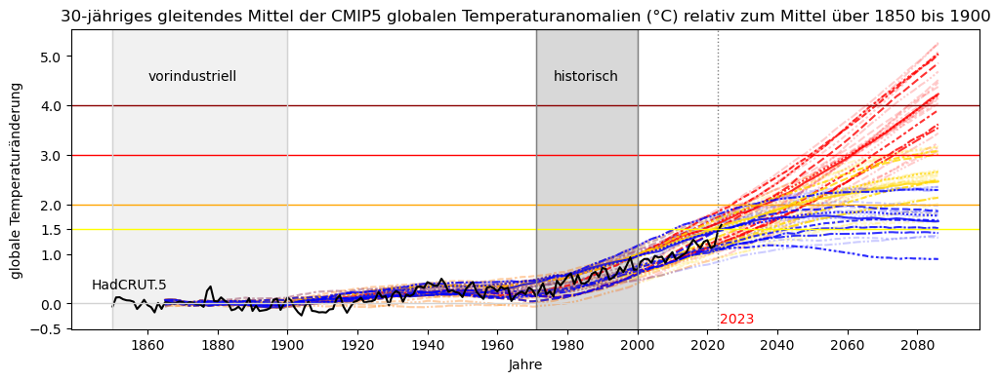
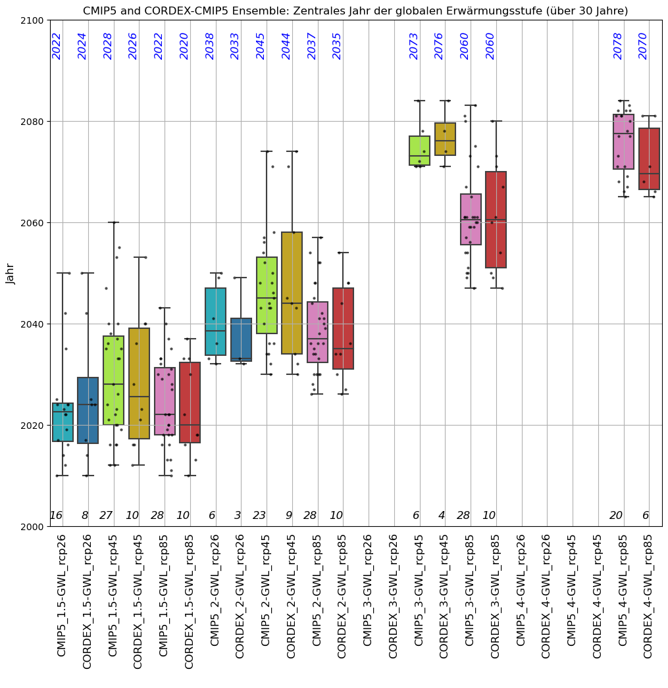

Globale Erwärmungsstufen#
Die Zeiträume, in denen die globalen Erwärmungsstufen (engl.: global warming level (GWL) Nikulin (2018)) von +1.5, +2, +3 und +4 °C erreicht werden, beziehen sich auf den vorindustriellen Durchschnittswert der Jahre 1850 bis 1900. Dies bedeutet, dass der globale Mittelwert der bodennahen Temperatur um 1.5, 2, 3 und 4 °C wärmer ist als im vorindustriellen Mittel. Die GWL werden für die globalen Projektionen von CMIP5 (Coupled Modelling Intercomparison Project 5) unter Verwendung eines gleitenden 30-Jährigen Mittelwertes berechnet.
Für die Berechnung der GWL wird die Methode aus dem IPCC-Atlas verwendet (Mathias Hauser). Für die hier vorliegenden Untersuchungen wurde lediglich die 20-jährige Zeitspanne im Programm des IPCC-Atlas auf eine 30-Jährige Zeitspanne erweitert. Der Unterschied zwischen den Ergebnissen für eine 20-jährige und 30-jährige Zeitspanne ist gering, in Einzelfällen verschiebt sich das zentrale Jahr des gemittelten Zeitraumes um ein Jahr.
Vorindustriell und heute#
Die GWL werden im Vergleich zur vorindustriellen Periode (PI) der Jahre 1850 bis 1900 berechnet. Um zu untersuchen, wie stark sich die Temperatur global in den Jahren 1971 bis 2000 verändert hat, verwenden wir den HadCRUT5 Datensatz (Morice (2020)), welcher üblicherweise in GWL-Studien verwendet wird. Global ist im HadCRUT Datensatz bereits ein mittlerer Temperaturanstieg von 0,51 °K im Vergleich zum vorindustriellen Zeitraum der Jahre 1971 bis 2000 zu erkennen.
Abbildung 3 zeigt die jährlichen Anomalien der global gemittelten oberflächennahen Temperatur im Vergleich zum vorindustriellen Zeitraum von 1850 bis 1900. Die mittlere Änderung im Referenzzeitraum von 1971 bis 2000 beträgt 0.51 K und ist eingezeichnet. Es wurde die neue Version des globalen oberflächennahen Temperatur Datasatzes HadCRUT5 des Met Office Hadley Centre/Climatic Research Unit verwendet.
Im Original besteht der HadCRUT5 Datensatz vom Met Office Hadley Centre/Climatic Research Unit aus monatlichen durchschnittlichen Anomalien der Oberflächentemperatur im Vergleich zum Zeitraum 1961-1990 auf einem regelmäßigen Raster von 5° Breitengrad mal 5° Längengrad von 1850 bis 2023. HadCRUT5 ist eine Kombination aus Messungen der Meeresoberflächentemperatur (SST) über dem Ozean von Schiffen und Bojen und Messungen der bodennahen Lufttemperatur von Wetterstationen über der Landoberfläche.
Diese Abbildung kann mit dem folgenden Notebook erstellt werden:
$ Notebooks/HadCru_GWL-update2024.ipynb
Es ist nicht möglich mit Hilfe der regionalen Klimasimulationen aus dem EURO-CORDEX Ensemble die Änderung zwischen dem vorindustriellen Zeitraum zu den Zeiträumen der GWL zu berechnen, da das EURO-CORDEX Ensemble erst im Jahr 1971 beginnt. Als Referenzzeitraum wird daher 1971-2000 festgelegt. In den hier vorliegenden Untersuchungen kann nur gezeigt werden, wie sich das Klima während des Zeitraums eines GWL im Vergleich zum Referenzzeitraum verändert hat. Die Temperatur ist bereits im Referenzzeitraum 1971-2000 im Vergleich zum vorindustriellen Zeitraum global angestiegen.
Ensembles für verschiedene globale Erwärmungsstufen#
Die Anzahl der globalen Projektionen in den Ensembles für die einzelnen GWL variiert. Alle globalen Projektionen des RCP4.5 (gelb) und RCP8.5 (rot) erreichen die GWL +1.5 und 2 °C. Aber Projektionen unter Verwendung des RCP2.6 Szenarios (blau) erreichen nur zum Teil die GWL 1.5 und 2 °C (siehe Abbildung 4). Aus diesem Grund wird hier das Modellensemble unter Verwendung des RCP8.5 verwendet. So bleibt wenigstens die Anzahl der Projektionen für GWL 1.5, 2 und 3 °C konstant. Für das GWL 4 °C reduziert sich das Ensemble auch unter Verwendung des RCP8.5 um 3 globale Simulationen.
Abbildung 4 zeigt die Temperaturanomalien im Vergleich zum vorindustriellen Zeitraum von 1850 bis 1900 aller CMIP5 Projektionen, die im IPCC-Atlas verwendet werden. Die helleren Linien repräsentieren die globalen Klimamodelle, die nicht als Antrieb in EURO-CORDEX verwendet werden, die dunkleren Linien repräsentieren die GCMs, die als Antrieb in EURO-CORDEX verwendet werden. Die Farben stehen für RCP2.6 (blau), RCP4.5 (gelb) und RCP8.5 (rot). Die Ergebnisse, der als Antrieb verwendeten GCMs, decken nahezu die gesamte Bandbreite der Temperaturveränderung auf globaler Ebene ab. In schwarz sind zusätzlich die jährlichen Anomalien der global gemittelten oberflächennahen Temperatur HadCRUT5 aus Abbildung 3 eingezeichnet.
Abbildung 4 kann mit dem folgenden Notebook unter Verwendung der Daten des IPCC-Atlas erstellt werden:
$ Notebooks/read_atlas_cmip5.ipynb
Die Analysen, die der GERICS Broschüre zu Grunde liegen, basieren auf den EURO-CORDEX Projektionen, welche das RCP8.5 Szenario verwenden. Diese werden für jedes GWL analysiert. Dadurch bleibt das Ensemble über alle GWLs konstant für 1.5, 2 und 3 °C, jedoch nicht alle globalen Klimamodelle erreichen das GWL von 4 °C. Der Anteil des EURO-CORDEX-Ensembles, für den das RCP8.5 Szenario verwendet wurde, enthält die meisten Kombinationen aus globalen Klimamodellen (GCM) und regionalen Klimamodellen (RCM). Durch die Auswahl des einen bestimmten Szenarios RCP8.5 bleibt das Modell Ensemble bestmöglich konstant. Es wird dadurch jedoch nicht berücksichtigt, dass eventuell unterschiedliche Treibhausgasantriebe eine Wirkung haben können, insbesondere im Hinblick auf Extremereignisse (Bärring (2018)). Weitere Informationen dazu befinden sich in Querkapitel-Box 11.1 im IPCC AR6 WG1 Chapter 11 .
Im Folgenden werden die Ergebnisse des gesamten Globalmodell-Ensembles des IPCC mit den Ergebnissen des Teilensembles der Globalmodelle (GCM), welche als Antrieb für EURO-CORDEX verwendet wurden, verglichen. Dieser Vergleich wird für jedes GWL und jedes RCP-Szenario durchgeführt. Ziel dieses Vergleichs ist es zu zeigen, ob die Ergebnisse des Teilensembles (bestehend aus GCMs verwendet als Antrieb für EURO-CORDEX) die gesamte Bandbreite der Ergebnisse des IPCC Globalmodell-Ensembles abdecken. Somit kann die Verlässlichkeit des Teilensembles eingeschätzt werden.
Abbildung 5 zeigt das zentrale Jahr der globalen Erwärmungsstufe (GWL) eines 30-jährigen Zeitraumes für jedes Globalmodell. Es werden für jedes RCP-Szenario die Ergebnisse des Ensembles der CMIP5 Modelle (verwendet im IPCC-Atlas) mit den Ergebnissen der CMIP5-CORDEX Modelle (verwendet als Antrieb für in EURO-CORDEX) miteinander verglichen. Die farbige Box erstreckt sich über den Bereich vom 25. bis zum 75. Perzentil, wobei der Median als schwarze Linie in der Mitte dargestellt wird. Der Median wird auch als blaue Zahl oben aufgeführt, und die schwarze Zahl unten gibt die Anzahl der Simulationen an, die das jeweilige GWL erreicht.
Abbildung 5 kann mit dem folgenden Notebook erstellt werden:
$ GWL_table/plot_GWL_years.ipynb
Die zentralen Jahre der GWL der Ergebnisse des CMIP5 Ensembles (CMIP5) (verwendet im IPCC-Atlas) und den Ergebnissen des CMIP5-CORDEX Ensembles (CMIP5-CORDEX) (verwendet als Antrieb für EURO-CORDEX) liegen für GWL 1.5 und 2 °C jeweils für alle drei RCP-Szenarien überwiegend innerhalb einer Dekade. Für GWL 3 °C ist der Unterschied zwischen dem Median der zentralen Jahre für RCP4.5 und RCP8.5 größer als 10 Jahre.
Für jedes einzelne RCP-Szenario stimmt der Median der Ergebnisse des CMIP5 Ensembles gut mit dem Median der Ergebnisse des CMIP5-CORDEX Ensembles überein. Eine Ausnahme bildet das GWL 4 °C, welches nur von einigen RCP8.5 Simulationen der EURO-CORDEX Simulationen erreicht wird. Hier zeigt sich eine Differenz von 8 Jahren zwischen den Medianen der beiden Ensembles.
Literatur#
Weiterführende Informationen zu den unterschiedlichen Methoden zur Berechnung der globalen Erwärmungsstufen sind in Nikulin (2018) , der Dokumentation des IPCC-Atlas, Vautard (2014) und Kjellstroem (2017) erläutert.